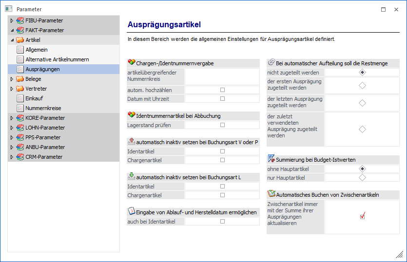
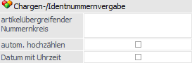
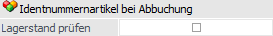
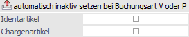
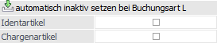
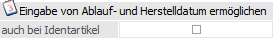
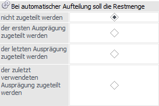
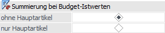
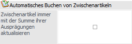

Über den Bereich "FAKT-Parameter - Artikel - Ausprägungen" können allgemeine Einstellungen für die Ausprägungsartikel der WinLine FAKT vorgenommen werden.
Hinweis
Standardmäßig wird das Fenster in einem "Lesemodus" geöffnet, d.h. es können die bestehenden Einstellungen kontrolliert, Änderungen allerdings nicht durchgeführt werden. Hierfür muss zunächst mit Hilfe des Buttons "Bearbeiten" der "Bearbeitungsmodus" aktiviert werden. Alternativ kann diese Aktivierung auch über das Kontextmenü der rechten Maustaste (Funktion "Applikation xxx bearbeiten") erfolgen.

Chargen-/Identnummernvergabe

Ø artikelübergreifender Nummernkreis
Wird hier ein Eintrag vorgenommen, dann wird bei Neuanlage eines Ausprägungsartikels die Chargen- bzw. Identnummer aufgrund des Nummernkreises hoch gezählt und nicht mehr aufgrund der zuletzt beim Hauptartikel vergebenen Nummer.
Beispiel
Wenn an dieser Stelle "CHAR0001" angegeben, so wird als erste Nummer "CHAR0002" verwendet. Wird z.B. "IDN" eingegeben, so wird als erste Nummer "IDN1" verwendet
Ø autom. hochzählen
Wird diese Option aktiviert, erscheint beim Speichern der Ausprägungen im Aufteilungsfenster keine Meldung mehr, falls die Nummer bereits vorhanden ist, sondern es wird automatisch die nächste freie Nummer gesucht und der Artikel mit dieser Nummer gespeichert.
Ø Datum mit Uhrzeit
Wird diese Option aktiviert, so können die Felder "Ablaufdatum" sowie "Herstelldatum" inkl. Uhrzeit versehen werden. Bleibt die Checkbox deaktiviert, so kann nur das Datum eingegeben werden.
Identnummernartikel bei Abbuchung

Ø Lagerstand prüfen
Bei aktivierter Option werden auch Ausprägungen mit Identnummern bzw. Identnummernartikel in die Prüfung des Lagerstandes lt. Einstellung in der Belegart (Lagerstandsunterschreitung "nicht" oder "mit Warnung erlaubt") miteinbezogen.
automatisch inaktiv setzen bei Buchungsart V oder P

Ø Identartikel / Chargenartikel
Wenn diese Checkbox aktiviert ist und via "Belegbearbeitung", "Lagerbuchhaltung", "Inventurbuchung" oder "Produktionsendmeldung" eine Abbuchung mit einer V- oder P-Buchung durchgeführt wird, dann werden die angesprochenen Identnummer/ Charge (bei Lagerstand 0) auf inaktiv gesetzt.
automatisch inaktiv setzen bei Buchungsart L

Ø Identartikel / Chargenartikel
Wenn diese Option aktiviert ist und via "Belegbearbeitung", "Lagerbuchhaltung", "Lagerumbuchung" oder "Produktionsendmeldung" eine L-Buchung durchgeführt wird, bei welcher der Lagerstand dieser Identnummer / Charge auf 0 gesetzt wird, so wird die Identnummer/Charge auf inaktiv gesetzt.
Eingabe von Ablauf- und Herstellungsdatum ermöglich

Ø auch bei Identartikel
An dieser Stelle kann definiert werden, ob auch bei Identartikeln das Herstell- und Ablaufdatum zur Verfügung stehen soll. Bei Aktivierung stehen die Felder im Artikelstamm und im Fenster "Ausprägungen erfassen" zur Verfügung.
Bei automatischer Aufteilung soll die Restmenge

Ø Aufteilung
Beim Erfassen eines Lieferscheins kann die Auftragsmenge eines Artikels mit Ausprägung automatisch auf die vorhandenen Ausprägungen aufgeteilt werden (z.B. Verkauf Chargen; es sollen automatisch zuerst die ältesten Chargen ausgeliefert werden).
Sollte die Auftragsmenge dabei größer als der vorhandene Lagerstand sein, so kann hier eingestellt werden, was mit der Restmenge passieren soll. Folgende Einstellungen sind möglich:
ü nicht zugeteilt werden
Die
Restmenge bleibt offen und es wird eine Teillieferung durchgeführt.
ü der ersten Ausprägung zugeteilt
werden
Die Restmenge wird der ersten angezeigten Ausprägung zugeteilt.
ü der letzten Ausprägung zugeteilt
werden
Die Restmenge wird der letzten angezeigten Ausprägung zugeteilt.
ü der zuletzt verwendeten Ausprägung
zugeteilt werden
Die Restmenge wird der letzten angezeigten Ausprägung,
welche bereits eine Liefermenge zugeordnet bekommen hat, zugeteilt.
Summierung bei Budget-Istwerten

An dieser Stelle kann definiert werden wie die Berechnung der IST-Werten in den folgenden Programmbereichen durchgeführt werden soll:
ü Artikelgruppenstamm, Reiter "Budget"
ü Artikeluntergruppenstamm, Reiter "Budget"
ü Budgetauswertung für Artikelgruppen und Artikeluntergruppen
ü Mehrjahresvergleich für Artikelgruppen und Artikeluntergruppen
Ø ohne Hauptartikel
Mit dieser Variante werden, in Bezug auf Ausprägungsartikel, nur "Hauptartikel mit Ausprägungen" in die Berechnung mit einbezogen. Ebenfalls berücksichtigt werden dabei Ausprägungen, die im Lagerstamm auf den Hauptartikel verweisen.
Ø nur Hauptartikel
Bei dieser Berechnungsmethode werden die "Hauptartikel ohne Ausprägungen" und die "Ausprägungen" berechnet. Ausprägungen, die im Lagerstamm auf den Hauptartikel verweisen, werden bei dieser Variante nicht berücksichtigt.
Automatisches Buchen von Zwischenartikeln

Ø Zwischenartikel immer mit der Summe ihrer Ausprägungen aktualisieren
Durch Aktivierung dieser Option werden beim Buchen eines vollständig ausgeprägten Artikels der Lagerstand und die Lagerorte der zugehörigen Zwischenartikel automatisch mit der entsprechenden Menge bebucht.
Des Weiteren werden die Zwischenartikel automatisch mit dem korrekten Startwert belegt. Hierbei werden bereits vorhandene Buchungen auf den Zwischenartikeln berücksichtigt.
Hinweis 1
Handelt es sich um einen Zwischenartikel, welcher weitere Zwischenartikel beinhaltet, so erfolgt auch in diesem Fall die Buchung auf die darüber liegende Zwischenartikelebene.
Hinweis 2
Zur Nutzung der Option ist es notwendig, dass alle Zwischenartikel im Mandanten angelegt sind. Dieses wird vor der Speicherung der Applikations-Parameter geprüft und ggfs. automatisch in das Programm "Ausprägungsanlage" gewechselt. Nach der erfolgreichen Anlage der Zwischenartikel werden die Applikations-Parameter wieder geöffnet und die Speicherung der Parameter kann final durchgeführt werden.
Achtung
Eine Lagerstandsübernahme (WinLine FAKT - Abschluss - Lagerstandsübernahme) ist nur möglich, wenn die Option "Zwischenartikel immer mit der Summe ihrer Ausprägungen aktualisieren" in dem Ausgangsmandanten und dem Quellmandanten identisch eingestellt sind.